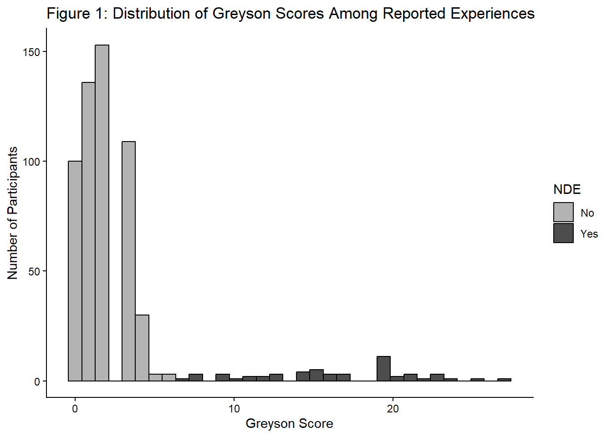
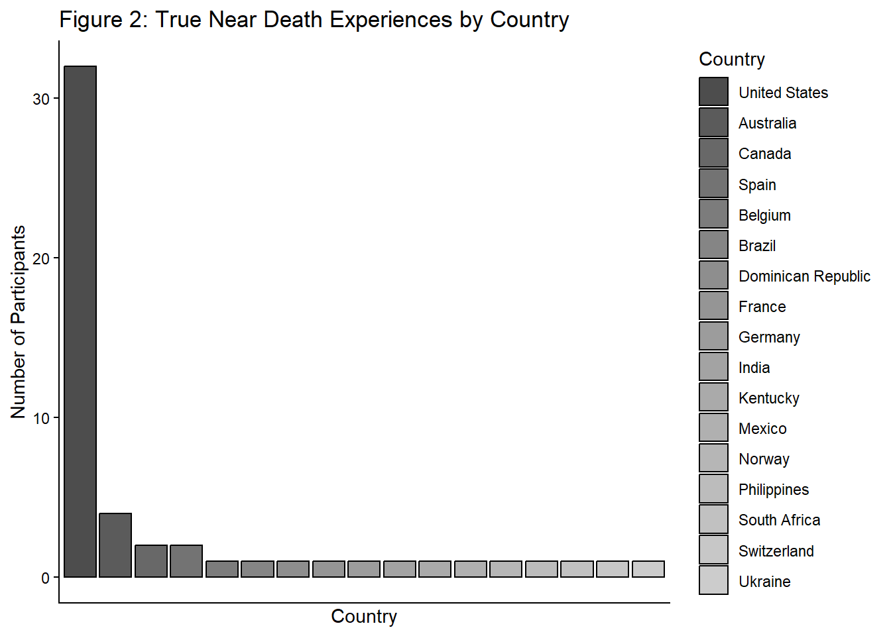
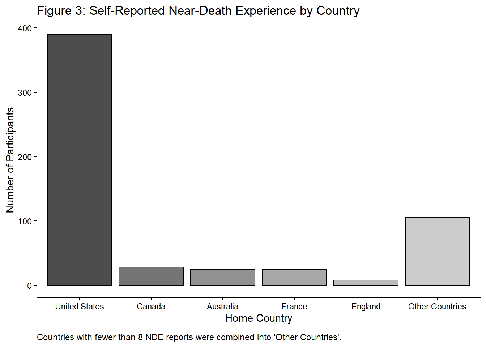
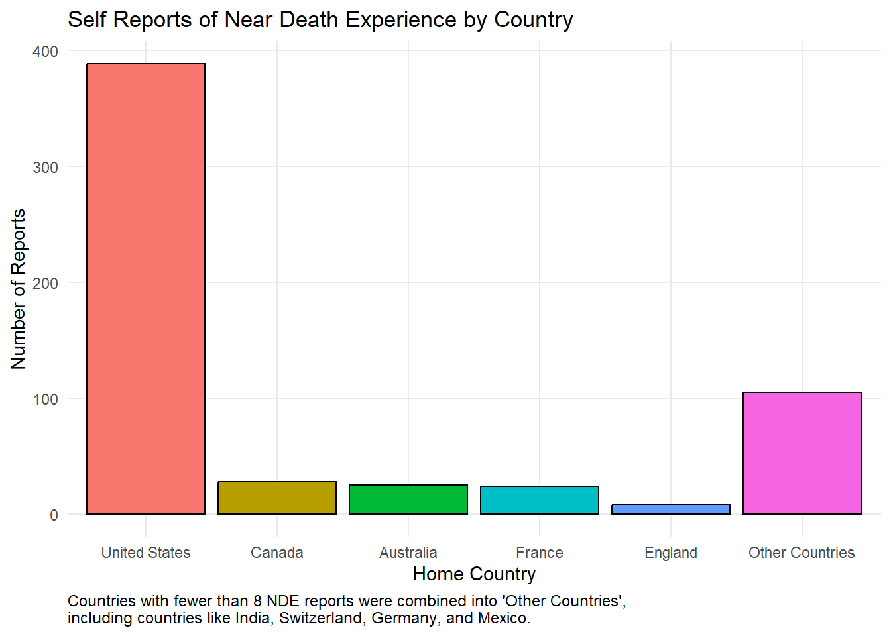
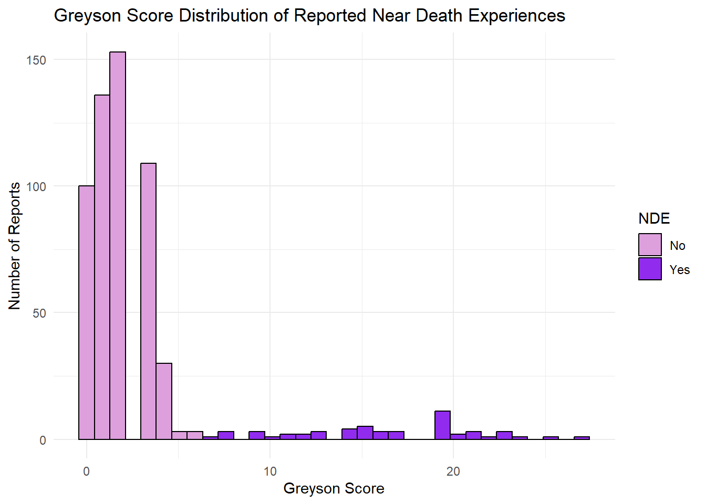
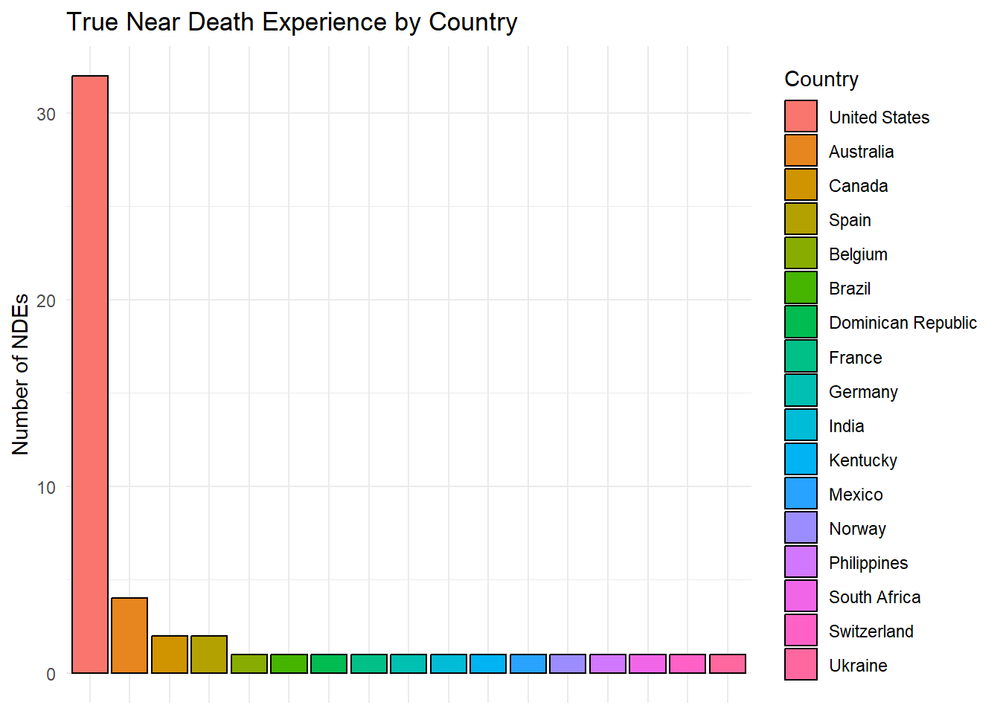

Visual_Data_Assignment
Near Death Experiences
Studies show that 10-23% of cardiac arrest survivors report their near-death experience and the Near-Death Experience Research Foundation (NDERF) publishes these self disclosures. Among self-reported near death experiences in the NDERF data set, reports are heavily concentrated in the United States. However, only some of these experiences are truly considered a near death experience (NDE). Most reported experiences do not meet the conventional threshold of a 7 or higher for a true NDE based on the Greyson scale. Among experiences meeting that threshold, the United States remains dominant, with Australia, Canada, and Spain following.
Scientific Article:
Distribution and Geographic Patterns of reported Near-Death Experiences
The Near-Death Experience Research Foundation (NDERF) collects self-reported accounts of experiences that individuals identify as near-death experiences. However, not all reported experiences meet the conventional threshold for classification as a near-death experience. We examined the distribution of Greyson scores and the geographic distribution of experiences classified as true NDEs.
The Greyson Near-Death Experience Scale ranges from 0 to 32, with scores of 7 or greater commonly used as the threshold for identifying an NDE. The distribution of scores in the dataset, see Figure 1, indicates that a substantial proportion of self-reported experiences fall below this threshold.
Thus, self-identification as an NDE does not necessarily correspond with classification of a true NDE based on the Greyson scale.
Among experiences meeting the threshold for a true NDE, reports are strongly concentrated in the United States. Australia, Canada and Spain account for the next largest groups of true NDEs as can be seen in Figure 2.

This geographic concentration is consistent across the broader set of self-reported experiences, as seen in Figure 3, except France has the fourth highest number of self reported near death experiences while Spain only has 2 self reported near death experiences.

However, these results should not be interpreted as evidence that individuals in the United States or other countries are more likely to experience NDEs. The dataset consists of voluntary self-reports and therefore reflects patterns of reporting and participation as well as the underlying experiences themselves.
Accessible Article:
Amercians Dominate Self Reported Near Death Experiences
People love to joke that American’s, and especially Floridians, have a special talent for making questionable decisions. Well, recent data from the Near-Death Experience Research Foundation shows that these stereotypes hold some truth to them.
The Near-Death Experience Research Foundation reports near death experiences (NDEs) and the United States dominates the list, followed by Canada and Australia.

As the graph above shows, the United States dominates with 389 reported NDE’s, almost 14 times more than the next closest country, Canada, with 28 reported NDEs. No wonder the world believes Westernized countries are more reckless than other nations.
Now, these are the number of self reported near death experiences. But, the Near-Death Experience Research Foundation also reports the Greyson score associated with each self report. The Greyson score ranks the level of a near death experience between 0-32 with any score 7 or above considered a true NDE. The following image shows the distribution of Greyson scores for each self reported NDE.

As we can see, the majority of self reported NDEs are not considered true NDEs. But, we can zoom in on the true NDE’s and we can see that the United States still dominates the list followed by Australia, Canada and Spain.

So, maybe the world has a reason to judge Westernized nations, and especially the United States, for being reckless. Otherwise how else should we interpret this data?
Data Statement
The data used in this analysis were obtained from the July 21, 2026 tidytuesday dataset, Near-Death Experiences (NDERF). The dataset was distributed through the tidytuesday GitHub Repository and originates from the Near Death Experience Research Foundation (NDERF). The analysis focuses on self-reported experiences and their associated Greyson scores. Experiences with a Greyson score of 7 or greater were classified as true NDEs for the purposes of this analysis. Countries with fewer than eight reports were combined into an “Other Countries” category for visualization. Because the data consist of voluntary self-reports, the results describe the composition of the NDERF dataset rather than the prevalence of NDEs across countries or populations.